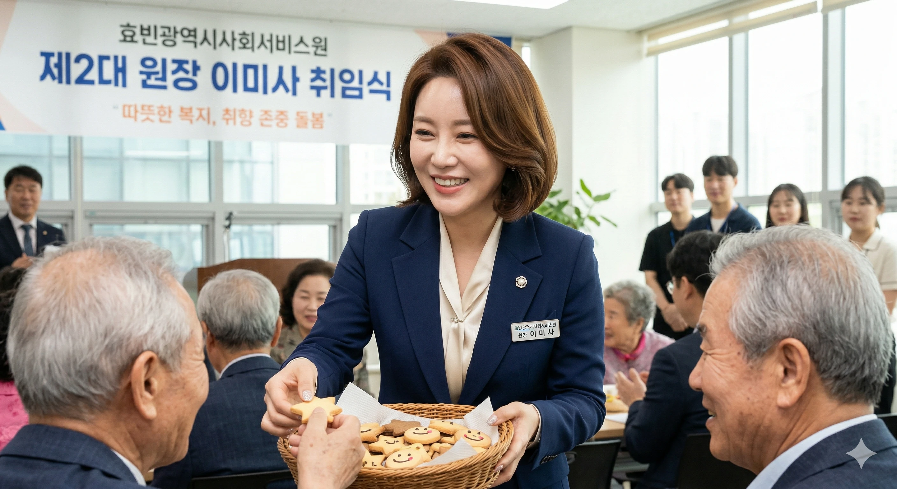

| 이름 | 이미사 (Lee Mi-sa) 李美沙 |
|---|---|
| 출생 | 1988년 8월 25일 (만 38세) 당시 효빈직할시 청엽구 칠심동 (현 효빈광역시 창전구 칠심동) |
| 국적 | 대한민국 |
| 학력 | 칠심여자고등학교 (졸업) 효빈대학교 사회복지대학 (사회복지실천학 / 학사·박사) |
| 현직 | 효빈광역시사회서비스원 제2대 원장 (2023.07 ~ ) |
| 가족 | 남동생 |
| 별명 | 칠심동의 성녀, 쿠키 굽는 원장님 왕엄마, 효빈대 사복실천의 전설 |
| MBTI | ESFJ |
대한민국의 사회복지학자이자, 현재 효빈광역시 복지 정책의 최전선인 효빈광역시사회서비스원 제2대 원장이다.
2023년 박효빈 시장 취임 이후 파격적으로 발탁된 젊은 피. "덕후도 늙는다. 하지만 그들의 열정은 케어받을 권리가 있다"는 범상치 않은 철학을 바탕으로 전국에서 가장 독특한 '취향 존중 돌봄(Cultural Competence Care)' 모델을 도입했다. 어르신들의 프라모델 취미를 권장하고 수집품 청소를 지원해 주는 등, 복지와 서브컬처를 접목시킨 파격 행보로 폭발적인 호응을 얻고 있다.
특유의 다정하고 헌신적인 성격으로 직원들에게 '왕엄마'라 불리며 압도적인 지지를 받고 있다.
"복지는 퍽퍽한 삶에 달콤한 쿠키를 굽는 마음으로 해야 해요. 따뜻하고, 정성스럽게."
1988년 효빈직할시 시절 청엽구 칠심동(현재 창전구 칠심동)에서 태어나고 자란 뼛속까지 칠심동 토박이다. 학창 시절부터 동네 어르신들 사이에서 '공부 잘하고 착한 미사'로 유명했다. 하지만 그녀가 사회복지라는 길을 걷게 된 계기는 결코 따뜻하지만은 않다.
2006년, 당시 칠심여고 3학년으로 대입 준비에 한창이었던 그녀에게 비극이 찾아왔다. 당시 윤대환 시장이 경로당 난방비 예산을 삭감하여 자신의 버스 회사(두청운수) 도로를 까는 데 유용하는 만행을 저질렀고, 이로 인해 맞벌이 부모님 대신 이미사 남매를 애지중지 키워주셨던 할머니가 한랭 질환으로 세상을 떠나신 것.
수능을 앞두고 차가운 병실에서 할머니의 임종을 지켰던 고등학생 이미사는 눈물을 훔치며 "다시는 돈 때문에 사람이 죽게 두지 않겠다"고 뼈저리게 맹세했다.
그 분노와 슬픔을 동력 삼아 효빈대학교 사회복지실천학과에 진학해, 학사부터 박사까지 스트레이트로 마친 '성골 효빈대인'이자 복지 전문가로 성장하게 된다. 이쯤 되면 윤대환은 효빈시의 모든 유능한 인재를 각성시킨 다크 나이트가 아닐까
평소에는 한없이 다정하다. 패션 센스도 굉장히 뛰어나고 친화력이 만렙이라, 직접 구운 쿠키를 돌리며 신입 직원들의 연애 상담이나 노인 요양원 어르신들의 말벗을 자처한다.
그러나 업무, 특히 '사회복지사업법' 및 '근로기준법' 준수에 있어서는 소름 돋을 정도로 완벽주의자다.
서류 토씨 하나 틀리는 것을 용납하지 않으며, 산하 기관에서 부정수급이나 학대 정황이 단 1%라도 포착되면 평소의 상냥한 웃음기를 싹 거두고 지옥 끝까지 추적하는 '차가운 도시 여자'로 돌변한다. 윤대환 시절의 잔재인 알박기 무자격 시설장들을 회계 감사로 영혼까지 털어버릴 때 보여주는 서늘한 눈빛은 공포 그 자체라고. [1]
극우 시민단체 대표 이차야가 효빈 시립 요양원에 난입하여, 어르신들이 치매 예방용으로 조립한 프라모델을 보고 "세금 낭비다! 장난감이나 만지게 하냐!"며 행패를 부린 어처구니없는 사건이다.
참전용사 할아버지(80세)가 티타늄 지팡이를 들고 분노하시며 어르신들의 팩트 폭격이 쏟아지는 가운데, 소란을 듣고 온 이미사 원장이 등장했다. 평소의 쿠키 굽는 누나 모습은 온데간데없이 절대영도의 눈빛으로 "어르신들의 정당한 여가 활동을 모욕하지 마세요. 당장 나가지 않으면 업무방해로 경찰 부르겠습니다."라고 일침을 가했다.
그 기백에 쫄아버린 이차야는 "죄, 죄송합니다..."라며 빤스런을 쳤고, 이 통쾌한 장면은 '효빈 요양원 어벤져스'라는 제목으로 유튜브에 박제되어 300만 조회수를 기록했다. 이차야는 왜 맨날 어딜 가든 쳐맞고 다니냐
천리나 (효빈정보산업진흥원장): 8월의 뜨거운 햇살을 닮은 미사와 11월의 차가운 늦가을 같은 리나는 서로 정반대지만 최고의 절친이다. 사회성이 부족해 구석에 박혀 밥을 거르는 리나에게 직접 싼 도시락과 쿠키를 들고 실본동까지 배달 가는 것이 이미사의 고정 일과다. 감동한 리나는 보답으로 사회서비스원의 모든 전산망과 서버를 세계 최고 수준의 무적 보안으로 세팅해버렸다.
고하나 (효빈디자인진흥원장): 같은 청엽구 출신의 3살 어린 동생. 극심한 대인기피증에 시달리는 고하나를 여동생처럼 챙겨준다. 고하나는 이미사를 "빛나는 사람"이라 부르며 존경하고, 그녀가 준 쿠키에서 영감을 얻어 디자인을 완성한다고 한다. 복지계 마더 테레사
탁민석 (효빈애니메이션본부 이사장): 미사가 할머니를 잃고 슬픔에 빠져 있던 칠심여고 시절, 당시 대학생이었던 탁민석이 "슬픔을 잊게 해줄 노래야"라며 애니메이션 OST CD를 선물해 위로해준 과거가 있다. 지금도 미사가 쿠키를 이사장실에 가져다주면, 탁민석은 유키나 등신대에게 먼저 한 입 권하는 광기를 보이고 미사는 자애로운 미소로 그걸 무시(?)해준다.
박효빈 (효빈광역시장): 자신의 철학을 200% 이해해주고 파격적인 나이에 원장으로 발탁해 준 든든한 상관. 영 케어러(가족 돌봄 청년) 휴식 지원 정책은 박효빈 시장의 처절했던 과거사에서 아이디어를 얻어 이미사가 현실로 구현해 낸 합작품이다.
남동생: 칠심동 우미린 아파트에 거주 중인, 이미사가 세상에서 제일 아끼는 동생. 가세가 기울어 알바를 전전하던 시절에도 "누나가 지켜줄게, 넌 마음껏 덕질해!"라며 동생의 오타쿠 취미를 전폭 지지해 준 눈물겨운 '동생 바보'다. 이 경험이 현재의 '취향 존중 돌봄' 철학의 근간이 되었다.
생일이 8월 25일이다. 외모, 다정하고 헌신적인 성격, 특기가 쿠키 굽기라는 점까지 BanG Dream!의 이마이 리사와 소름 돋을 정도로 완벽하게 판박이다.
시민들 사이에서는 "시장님이 기관장 뽑을 때 관상... 아니 덕력을 검증한 것 아니냐"는 합리적 의심이 매일같이 제기된다. 본인은 "리사쨩처럼 따뜻한 사람이 되고 싶을 뿐"이라며 웃어넘기지만, 어떻게 생일까지 똑같을 수가
현재는 단정하고 세련된 정장 스타일을 유지하지만, 대학 시절이나 20대 초반에 엄청나게 화려한 '갸루 패션'을 즐겼다는 찌라시가 효빈대 사복과 동문들 사이에서 암암리에 돌고 있다. 네일아트 실력이 수준급인 것도 그 시절의 잔재라는 카더라가 존재한다. [2]